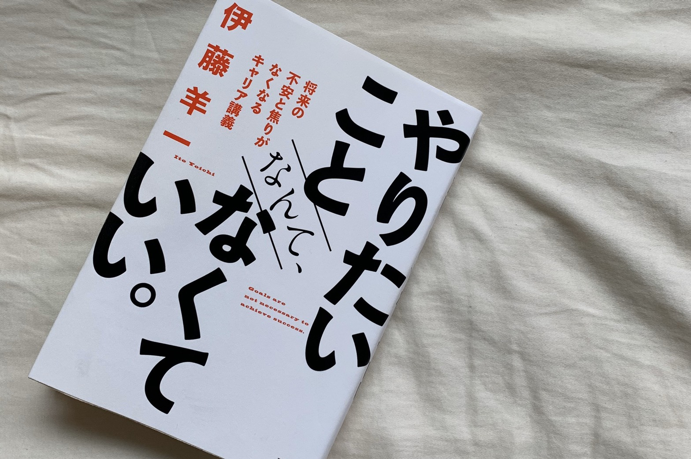

やりたいことなんてなくていい。
「一分で話せ」著者待望の新作！

ベストセラー「一分で話せ」で有名な伊藤羊一さんの新作、「やりたいことなんてなくていい。」とは？
徹底解説していきます！
・「今やっていること」に夢中で取り組め！
・「何故か周りに助けられる人」が大切にしていること
・人生を変える「リーダーシップ」の話をしよう
・まとめ
- 「今やっていること」に夢中で取り組め！
- 「何故か周りに助けられる人」が大切にしていること
- 人生を変える「リーダーシップ」の話をしよう
- まとめ
「今やっていること」に夢中で取り組め！
やりたいことがあるに越したことはないが、「やりたいことがなくて悩んでいる人」がいるとすれば、「今やっていることに120%で取り組む」ことが大切だと述べています。
目の前の仕事や経験の中にこそ、「将来の武器」が潜んでいるという事ともいえます。
だからこそ、キャリアプランより「目の前の仕事や経験」が大切とも述べています。
mustを積み重ねて、できること=canのレベルを圧倒的に高めていけば、いずれ結果的にそれがwillになっていく。
だからこそmust=目の前の仕事や経験を優先すべきだ、ということですね。
しかし、ここで気を付けなければならないのが、
「実践を伴った経験値かどうか」
という点です。
例えば、ビジネス書で覚えたノウハウや、資格試験で身に付けたスキル、
これらは活きた経験ではないので、ここで満足してはいけません。
「学んだら、必ず実践して自らの経験にすること」
これが重要なのです。
そんな、mustの必要に迫られて始めたことを突き詰めて、成果を上げると思いもよらない未来が開ける、という考え方を
わらしべ長者的キャリア
と呼んでいます。
このわらしべ長者的キャリアには3つの極意があります。
１． クオリティを徹底的に上げよ
２． 常に人を驚かせよ
３． 食わず嫌いせず、何でも引き受けよ
この３つです。
特に「常に人を驚かせよ」というフレーズは心に刺さりました。
頼まれた仕事で100％の成果を出すのは当たり前。
それ以上の成果を残せたときにこそ相手の心をガシッっとつかめる。
そんな考え方を最近は自分の中に沁み込ませようとしています。
「何故か周りに助けられる人」が大切にしていること
「あなたのキャリアはコミュニケーション能力で9割決まる」
そんな書き出しで始まります。
急にそんなぁ！！！って感じですよね(笑)
「誰に、どの程度応援される人になるか」は、将来を決定づける大きな要素だそうです。
どれだけ目の前の仕事に120%で取り組んでいても、そのあとに誰からも仕事を任されなかったら意味がないですよね。
では、どうすれば「応援される人間」になれるのか？
それは「フラットな人間関係を築けるかどうか」で決まる、と言い切っています。
年上の人と年下の人、「すごい人」と「そうでもない人」、芸能人と一般人、そんな肩書によって態度を変えるのではなく、「フラット」に接することが大切なのです。
その根底にあるのは、
「他者へのリスペクト」です。
自分と違う経験を持っている人は、それだけでリスペクトに値します。
相手が誰かによって、態度を変える人。あるいは、相手がどういう状況にあるかによって態度を変える人。
そんなフラットでない人はあまり「応援したい」とは思えないですよね。
更に大事なのは、
「あいつはアホだ」と思われるぐらい自己開示せよ
という点です。
常に取り繕ってかっこよく見せようとしていませんか？
しかし、ピンチのときこそ演じることをやめ、オープンな姿勢で自分のダメなところをさらけ出す。すると、愛嬌が生まれ、「なんとかしてやりたい」という「応援される力」が発揮されるのではないでしょうか？
「応援される力」には圧倒的な自己開示が必要なのです。
人生を変える「リーダーシップ」の話をしよう
著者の伊藤羊一さんは、
「リーダーシップとは、
自分の信念に基づいた意思決定と行動のスタイルだ」
と述べています。
メリット・デメリットを整理しても正解を導き出せない問題がある。
AとBのどちらを選ぶのが正しいのか、絶対的な答えが出ないことがある。
そこで判断をするのがリーダーの仕事であり、意思決定です。
その判断をするにおいて、大切にしなければならないのが「信念」というキーワードなのです。
正解がない中で、自分が後悔しない決め方をするには「自分が正しいと信じていることに従って決める」しかないのです。
それすなわち、「自分の信念に基づいて決める」ということです。
リーダーに必要なのはスキルではなく、このような「マインド」なのです。
まとめ
どれだけ将来に不安があっても、目の前のことに120%で取り組んでいるうちにおのずとキャリアは開ける、というお話です。
若い頃は仕事でダメダメだった筆者が、どうやって現在のYahoo!アカデミア学長にまでなることができたのか。
そのマインドが書かれています。
２～３時間ほどあれば読めちゃうのでぜひ手に取って見てください！